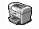
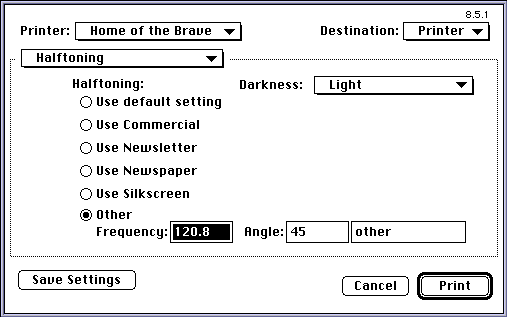
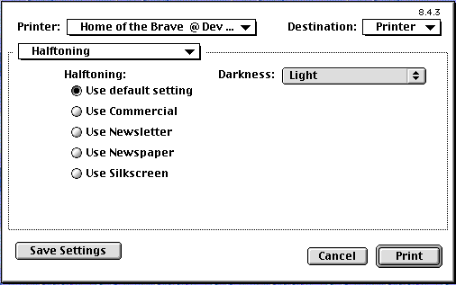

Legacy Document
Important: This document is part of the Legacy section of the ADC Reference Library. This information should not be used for new development.
Current information on this Reference Library topic can be found here:
ADC Home > Reference Library > Technical Notes > Legacy Documents > Printing >
Important: This document is part of the Legacy section of the ADC Reference Library. This information should not be used for new development.
Current information on this Reference Library topic can be found here:
|
ResourcesThere are a few resources that you can add to your PPD file to improve the user experience with the LaserWriter 8.4 and above drivers. Resource IDs must be in the range of driver-owned resources (that is -8160 to -4090), but the resources used in your PPD file should be in the ID range of -7500 to -6500 to avoid conflicts with future revisions of the LaserWriter driver. IconsYou will need four icon families in your PPD files to represent various 'stages' of a desktop printer:

Three additional icon families are pointed to by the '
'
'
Even though Apple has used the IDs -7189, -7188 and -7187 for these icon families
and resource ID -7192 for the ' Please see any of Apple's LaserWriter PPDs for examples of these icons. Customizing the Panels within the Print DialogCustom items displayed within the Printer-Specific panel(s) of the print
dialog are controlled by two resources within the PPD file: the ' Custom alert behavior for feature constraints is controlled by three resources in the
PPD file: the ' If you use the '
Adding items to the '
|
*OpenUI *APHalftoneUI/Halftoning: PickOne *DefaultHalftoneUI: PrintersDefault *APHalftoneUI PrintersDefault/Use default setting: "" *APHalftoneUI Commercial/Use Commercial: "80 45 (Dot) pop pop pop" *APHalftoneUI Newsletter/Use Newsletter: "120 45 (Newletter) pop pop pop" *APHalftoneUI Newspaper/Use Newspaper: "150 45 (Newspaper) pop pop pop" *APHalftoneUI Silkscreen/Use Silkscreen: "100 45 (Silkscreen) pop pop pop" *APHalftoneUI Set/Other: "" *CloseUI: *APHalftoneUI |
Note that the option 'Set' with the translation string 'Other' is included. [The option keyword to specify this extra choice must be 'Set'.] It is highlighted when the user selects that radio button and enters text into the edit text fields, as shown below:

Two additional PPD main keyword/option keyword pairs specify the data the
driver needs to display the UI properly and generate the appropriate PostScript
invocation code. The special derived main keyword used for this information is
taken from the main keyword for this UI. The derived main keyword is created by
concatenating the text 'RBISet' with the main keyword of the UI itself. In our case,
the main keyword is 'APHalftoneUI' so our derived main keyword is
'RBISetAPHalftoneUI'.
There are two option keywords used with this main keyword. The option keywords are
'Data' and 'Code'. The 'Data' option keyword is used to
specify the data format,
initial values, and data ranges appropriate for the edit text fields:
For numbers
For text
The data for a text edit field will be treated as text (as opposed to a number)
if, instead of being introduced with 'fixed' or 'long', comprises of an opening
'(', followed by the default text characters, then terminated by a closing ')'.
There is no quoting of characters here so if characters outside the standard
7 bit ASCII set are required for the default text, then the corresponding Macintosh
character codes must be used. These
characters are treated as Macintosh encoded characters and the value of the PPD
*LanguageEncoding keyword is not used to transform them. In addition, due to an
existing bug, the ')' character cannot be used in the default text.
Here is the data specification for our example:
*RBISetAPHalftoneUI Data: "fixed 60. 150. 120.8 long 0 180 45 (Custom) 18"In addition to the 'Data' option keyword, there is a 'Code' option keyword that is used when generating the PostScript invocation of the text edit feature. This invocation is used when the text edit portion of the UI is selected (the user selects the 'Other' radio button in our example above). Prior to inserting the PostScript invocation into the PostScript output stream, the driver pushes the data for each text edit field (in the same order as dialog item numbers for the fields themselves) onto the operand stack, then it emits the invocation code provided. For our example, the PPD data fork contains:
*RBISetAPHalftoneUI Code: " pop pop pop"If the user enters values of 120.8, 45, and 'Custom" in our example text edit fields
in that order, the driver emits
into the PostScript output stream when this feature is invoked. Note that text edit items which are to be treated as text strings are properly generated as PostScript strings. Text edit items which are to be treated as numbers are properly generated as floating point numbers or integers depending on whether 'fixed' or 'long' is used to specify the data type.
Since most of the features discussed in this Technote are based on the resource fork of the PPD file, they are unused by drivers earlier than LaserWriter 8.4.x. For example, users of those older drivers will see the older style generic pop-up menus for printer specific features instead of the fancy custom dialogs you have added to your PPD resource fork. For the most part, use of these new features causes no compatibility problems with earlier drivers. However, the specification of the extended text capabilities introduced with LaserWriter 8.5.1 does require careful usage to avoid compatibility problems with earlier drivers.
There are two areas of compatibility which need to be considered when constructing a PPD file which uses the new extended text capabilities. The first issue is creating a PPD which works properly with older LaserWriter drivers (prior to LaserWriter 8.4), or platforms (such as Windows) where the resource fork of the PPD file is not used. Because the data fork portion of the PPD file needs to reflect some of the data for the text edit feature, we have been careful to ensure compatibility with these older drivers and other platforms. The special new derived keyword/option pairs should not be a problem, ignore these special main keyword.
However, we added an extra option keyword 'Set' with the main keyword
'*APHalftoneUI'.
This was to enable the driver to have the extra PickOne choice specified by the text
edit fields. In older drivers, this will appear as an extra choice in the APHalftoneUI
user interface, with the translation string 'Other'. The translation string could be
anything and it is most likely appropriate for the invocation code to do nothing.
*APHalftoneUI Set/Other: ""
LaserWriter 8.4.x uses the resource fork, but doesn't know about the extended text
portions of the 'ppdT' resource. It doesn't know how to deal with text edit fields,
should they be present in the dialogs. Since the 'DITL' resource corresponding to
the panel containing the text edit strings must contain the text edit items, it is
beneficial to hide these items so that older drivers won't display them. To
accommodate this need, there is special handling for 'DITL' items if the 'ppdT'
resource corresponding to a given 'DITL' has a version field of 1. In this case,
for each dialog item with a right coordinate less than zero, the LaserWriter 8.5.x
driver adds 1000 to both the right and left coordinates before displaying the panel
corresponding to the 'DITL'. This allows PPD creators to hide items which should not
be displayed by older PPD resource fork aware drivers, yet have those items appear
properly in the UI otherwise.
Using our example PPD, the user sees the radio buttons in the standard UI, but, since
we've hidden all the controls and items related to the text edit fields (by setting
the 'ppdT's version field to 1), the user does not see those items, as shown in the
screen shot below:

ppdA' resourceThe 'ppdA' resource can be used in order to specify UI constraints with greater
than two features. The current PPD specification only allows for two way constraints;
i.e. where feature A can constrain feature B. However, Apple has encountered numerous
situations where three and four way constraints were needed, so we created the 'ppdA'
resource with LaserWriter 8.4.1 and above. This resource allows for N-way constraints
where N is greater than or equal to 2. For instance, if your printer has a constraint
that photograde cannot be selected if you have less than X MB of memory and duplex
is chosen, you need this new resource. In addition, the UI gets rather confusing to
users when items constrain one another without explanation; it is useful, therefore,
to provide more explicit feedback to the user with a combination of the 'ppdA'
resource and its associated 'DITL' and 'ALRT'.
The 'ppdA' resource contains a trigger PPD main keyword and a list of option
keywords
for that main keyword which, when selected, triggers the checking of additionally
specified constraining main/option pairs. The resource also contains a target main
keyword/option pair that is set to clear the constraint, if the user wants to proceed.
An alert of the same resource ID should be supplied in which the OK and Cancel buttons
are items 1 and 2.
There is a TMPL for the 'ppdA' in the driver's resource fork in LaserWriter 8.4.1
and above.
|
signature |
should be ' |
|
version |
1 |
|
|
0 if this constraint should be checked each time a ppd control is set.
1 if this constraint should be checked when the dialog's OK button is hit or when
the user switches panels within the dialog. This is useful if previously saved
defaults cause a constraint failure of this ' |
|
Trigger main |
This constraint resource is checked when this trigger main
keyword and any of its trigger options are being set by the user. If |
|
Trigger Option count |
Number of constraining trigger option keywords for this main keyword. |
|
Trigger Option |
List of constraining trigger option keywords. |
|
Target main |
Main keyword for the target constraining feature. |
|
Target option |
Target option keyword that is set, if the user hits OK in the constraints alert. This option should NOT be constrained. |
|
Target Option count |
Number of constraining options for the target main keyword. |
|
Option |
List of constraining option keywords for the target main keyword. |
|
Constraint list count |
Number of additional constraining PPD main keywords. For
an n-way constraint, this number is n-2. This is non-zero if the constraint
described by this ' For each item in this list, there is a main keyword, an option count, and a list of option keywords which cause the constraint to fail. For the constraint to fail, the current option setting for each main keyword must be in the list specified for that main keyword. |
|
Main |
Additional constraining main keyword. |
|
Option count |
Number of constraining options for this main keyword. |
|
Option |
The constraining option keyword(s). |
Please see the sample PPD for examples of the 'ppdA' resource.
You can add balloon help to the items described in your 'DITL' in the
same way you would for dialog items in an application. You add a help
item to the 'DITL', it points to a 'hdlg' and that gets appended to any
already existing balloon help. The only thing to remember is that the PICT
controls used by LaserWriter 8 don't actually have multiple states, so you
need to write the help string for those items so it covers all the
possible cases. For more information on Balloon Help and the 'hdlg' resource,
see Inside Macintosh: More Macintosh Toolbox, Chapter 3. Make sure that your
help resources are also in the range specified above.
That's all there's to it. Adding these resources will improve your user experience for printer specific options. The best examples available are the PPDs supplied with the LaserWriter 8 driver for use with Apple printers and the sample PPD included with this document.
Adobe PostScript Printer Description Specification from Adobe Systems Incorporated.
PostScript Language Reference Manual, 2nd Edition from Adobe Systems Incorporated.
LW 12/640 PS extended PPD sample
Inside Macintosh: More Macintosh Toolbox, Chapter 3
Resource Templates for the 'ppdT' and 'ppdA'
resources
type 'ppdT' {
unsigned longint; // signature 'rbi1'
integer; // version
integer = $$Countof(Checkboxes); // numCheckboxes
wide array Checkboxes
integer; // dlgItem
pstring; // main keyword
align word;
};
integer = $$Countof(Rads); // numRadios
wide array Rads {
integer; // radsFrom
integer; // radsTo
pstring; // main keyword
align word;
integer = $$Countof(Options); // numOptions
wide array Options {
pstring; // option keyword
align word;
};
};
integer = $$Countof(Menus); // numMenus
wide array Menus {
integer; // dlgItem
pstring; // main keyword
align word;
integer = $$Countof(Options); // numOptions
wide array Options {
pstring; // option keyword
align word;
};
};
integer = $$Countof(PictControls); // numPicts
wide array PictControls {
integer; // dlgItem
integer; // color - offID
integer; // 1bit - offID
integer; // color - onID
integer; // 1bit - onID
integer; // color - forbiddenID
integer; // 1bit - forbiddenID
integer; // maskID
unsigned byte; // enabled
unsigned byte; // forbidden
unsigned byte; // value
unsigned byte; // reserved
longint; // reserved
pstring; // main keyword
align word;
pstring; // option keyword
align word;
};
integer = $$Countof(Text); // text fields
wide array Text {
integer; // textFrom
integer; // textTo
integer; // numParamsAlertID
integer; // maxTextAlertID
pstring; // main keyword
align word;
};
};
type 'ppdA' {
unsigned longint; // signature 'rbi1'
integer; // version
byte; // print time
byte; // filler
byte; // filler
byte; // filler
pstring; // trigger main
align word;
integer = $$Countof(Options); // option count
wide array Options {
pstring; // option
align word;
};
pstring; // target main
align word;
pstring; // target option
align word;
integer = $$Countof(Options1); // option count
wide array Options1 {
pstring; // option
align word;
};
integer = $$Countof(MainKeywords); // constraint list count
wide array MainKeywords {
pstring; // main
align word;
integer = $$Countof(Options2); // option count
wide array Options2 {
pstring; // option
align word;
};
};
};
|
|
|
Acrobat version of this Note (248K). |
|